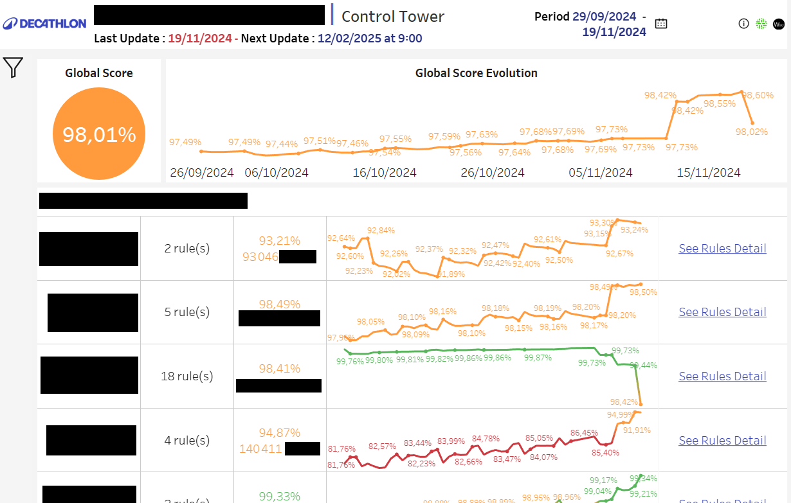
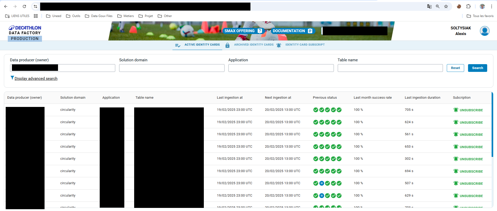

07/2024 – Maintenant
Data Steward et Data Quality Manager
Decathlon
Réalisation
Data Steward :
- Documentation complète dans le datacatalog Collibra des tables (~160 tables).
- Mise en place de processus pour l’ajout de table ou de colonne dans le datalake.
- Gestion des cartes d’ingestion des données quotidien.
- Création de nombreuses présentations pour la data gouvernance.
- Création de nombreux cycles de vie des processus de la circularité.
- Aide dans la création du fichier de documentation automatique en App script.
- Aide quotidienne pour les data users dans leurs métiers.
- Création de schémas UML pour les différents domaines de la circularité.
- Acteur principal pour la mise en place d’un RAG sur un LLM (Chatbot).
- Accompagnement des Product Managers et des Tech Leads sur tout le process d’ingestion des données.
- Création entière de la documentation sur Confluence du domaine.
Data Quality Manager :
- Création du document **Qualidoc** permettant de faciliter l’ajout des champs techniques et fonctionnels des règles de qualité.
- Création de nombreuses règles de qualité avec les Product Managers.
- Création de tours de contrôle sur Databricks avec Spark puis Airflow pour le backend.
- Création de tours de contrôle sur Tableau pour le frontend.
- Résolution quotidienne de problèmes de qualité avec des tickets sur Jira (RUN).
Chez U-need en parallèle :
- Création de **CVtoDT** : Application permettant de convertir un CV en dossier de compétences.
- Création d’une intégration continue avec GitHub Actions.
- Déployé entièrement sur AWS et Dockerisé.
- Utilisation de l’IA générative ainsi que d’une API FastAPI.
- Protection via tokens d’accès et images sécurisées.
Méthodologie & Environnement
Méthodologie : Meetings toutes les semaines avec l’équipe gouvernance, meetings avec les Product Managers, roadmap et tickets sur Jira.
Galerie

